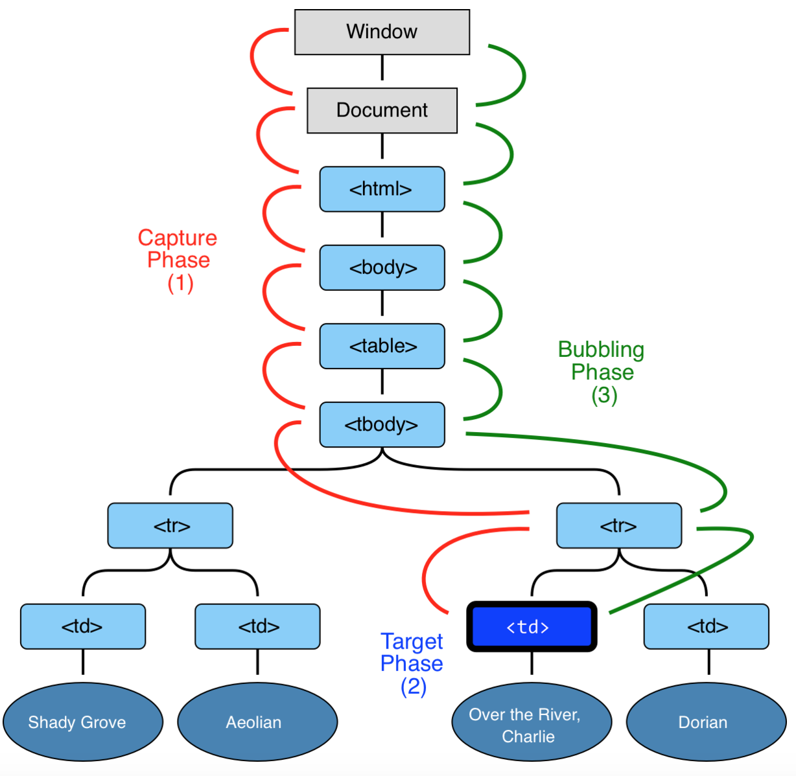

DOM
class: center, middle .title[ Front-end training # DOM ] --- class: center, middle  --- # What is the DOM? The DOM is a W3C (World Wide Web Consortium) standard. The DOM defines a standard for accessing documents:<br/> _"The W3C Document Object Model (DOM) is a platform and language-neutral interface that allows programs and scripts to dynamically access and update the content, structure, and style of a document."_ The W3C DOM standard is separated into 3 different parts: - Core DOM - standard model for all document types - XML DOM - standard model for XML documents - HTML DOM - standard model for HTML documents --- # What is the HTML DOM? The HTML DOM is a standard object model and programming interface for HTML. It defines: - The HTML elements as objects - The properties of all HTML elements - The methods to access all HTML elements - The events for all HTML elements In other words: The HTML DOM is a standard for how to get, change, add, or delete HTML elements. --- class: center, middle # DOM  --- # Nodes types -- - Document - **9** -- - DocumentType - **10** -- - Element - **1** -- - Text - **3** -- - Comment - **8** -- - DocumentFragment - **11** --- class: center, middle # From this 👇  --- ### To this 👇  --- If you 🤔 wondering what's a tree is, take a look at 😉: - https://en.wikipedia.org/wiki/Tree_(data_structure) - https://youtu.be/oSWTXtMglKE --- # DOM With the DOM, JavaScript gets all the power it needs to create dynamic HTML: - JavaScript can change all the HTML elements in the page - JavaScript can change all the HTML attributes in the page - JavaScript can change all the CSS styles in the page - JavaScript can remove existing HTML elements and attributes - JavaScript can add new HTML elements and attributes - JavaScript can react to all existing HTML events in the page - JavaScript can create new HTML events in the page --- # DOM Reaching Elements in a Document ```javascript // Retrieves the element with the given id as an object document.getElementById('id'); // Retrieves all elements with the tag name tagname and stores them in an // array like document.getElementsByTagName('tagname'); // returns the first element that is a descendant of the element that matches specified selector document.querySelector // return list of elements that matches specified selector document.querySelectorAll ``` --- # DOM Reading Element Attributes, Node Values and Other Data ```javascript // Retrieves the value of the attribute with the name attribute node.getAttribute('attribute'); // Sets the value of the attribute with the name attribute to value node.setAttribute('attribute', 'value'); // Reads the type of the node (1 = element, 3 = text node) node.nodeType; // Reads the name of the node (either element name or #textNode) node.nodeName; // Reads or sets the value of the node (the text content in the case of // text nodes) node.nodeValue; ``` --- # DOM Navigating Between Nodes ```javascript // Retrieves the previous sibling node and stores it as an object. node.previousSibling; // Retrieves the next sibling node and stores it as an object. node.nextSibling; // Retrieves all child nodes of the object and stores them in an list. // here are shortcuts for the first and last child node, named node. // firstChild and node.lastChild. node.childNodes; // Retrieves the node containing node. node.parentNode; ``` -- <br /> 👉 optional task: > try to implement your own `getElementsByTagName` or `getElementById` function, using only functions mentioned on this slide 🤘 --- Creating New Nodes ```javascript // Creates a new element node with the name element. You provide the name // as a string. document.createElement(element); // Creates a new text node with the node value of string. document.createTextNode(string); // Creates newNode as a copy (clone) of node. If bool is true, the clone // includes clones of all the child nodes of the original. newNode = node.cloneNode(bool); // Adds newNode as a new (last) child node to node. node.appendChild(newNode); // Inserts newNode as a new child node of node before oldNode. node.insertBefore(newNode, oldNode); // Removes the child oldNode from node. node.removeChild(oldNode); // Replaces the child node oldNode of node with newNode. node.replaceChild(newNode, oldNode); // Reads or writes the HTML content of the given element as a string including // all child nodes with their attributes and text content. element.innerHTML; ``` --- class: center, middle .title[ Front-end training # Events ] --- # Mouse Events ***onclick*** <br/>The event occurs when the user clicks on an element ***ondblclick*** <br/>The event occurs when the user double-clicks on an element ***onmousedown*** <br/>The event occurs when a user presses a mouse button over an element ***onmousemove*** <br/>The event occurs when the pointer is moving while it is over an element ***onmouseover*** <br/>The event occurs when the pointer is moved onto an element ***onmouseout*** <br/>The event occurs when a user moves the mouse pointer out of an element ***onmouseup*** <br/>The event occurs when a user releases a mouse button over an element --- # Keyboard Events ***onkeydown*** <br/>The event occurs when the user is pressing a key ***onkeypress*** <br/>The event occurs when the user presses a key ***onkeyup*** <br/>The event occurs when the user releases a key --- # Handlers Inline ``` html <div onclick='getACupcake(event)'> ``` addEventListener() ```javascript document.getElementById('cupcakeButton').addEventListener('click', getACupcake); ``` Assigning to event handler properties ```javascript document.getElementById('cupcakeButton').onclick = getACupcake; ``` --- # Event object `event.target` is the original element the event happened to. ```javascript function getACupcake(event) { event.target.style.backgroundColor = '#F00'; // use it } ``` --- ## Capturing vs Bubbling - Capturing phase – the event goes down to the element. - Target phase – the event reached the target element. - Bubbling phase – the event bubbles up from the element. <pre class="bubbling-img">  </pre> --- # Links An Introduction to the Document Object Model (DOM) 🚀 - https://javascriptforwp.com/the-dom/ - https://javascriptforwp.com/creating-and-adding-text-and-element-nodes-to-the-dom/ - https://javascriptforwp.com/intro-to-events/ - https://javascriptforwp.com/dom-event-propagation-javascript-capturing-bubbling-explained/ JavaScript Event Capture, Propagation and Bubbling 🔥 - https://youtu.be/F1anRyL37lE --- class: center, middle .title[ ## Thanks ## The End ]